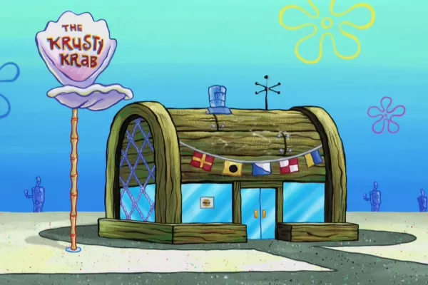
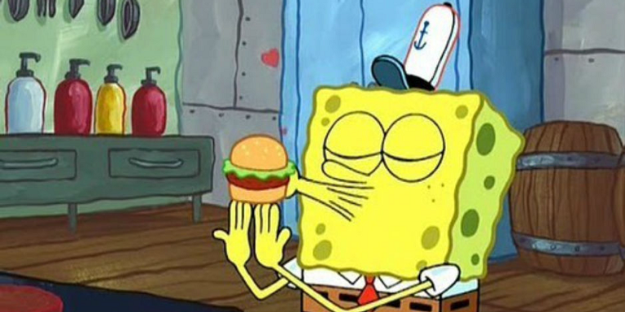

O seu Cascudo
Restaurante do seu cascudo
O siri cascudo é o restaurante mais conhecido da Fenda do Biquini. O proprietario é o ganancioso Sirigueijo, o cozinheiro é o espontaneo Bob Esponja e o gerente é o rabugento Lula Molusco.

o famoso hambúguer do siri
hamburguer com carne feita realmente de siri empanado e crococante
receita
- pao de farinha de coral
- maionese de lagostin
- queijo de cavalo marinho
- saladas de algas
- hambúrguer de siri
- molho especial da casa

horários e contato
- 10:00 horas até as 22:00
- número de contato:331-123